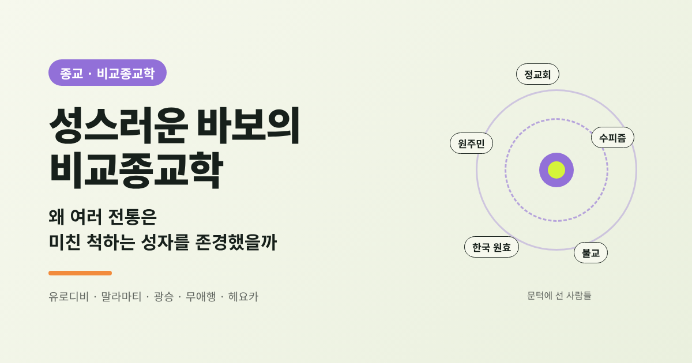

성스러운 바보의 비교종교학 — 왜 여러 전통은 미친 척하는 성자를 존경했을까

이번 글에서는 '성스러운 바보', 곧 거룩한 광인을 비교종교학의 눈으로 살펴보겠습니다. 동방정교회, 이슬람 수피즘, 불교, 한국 불교, 아메리카 원주민 전통에서 각각 어떤 모습으로 나타났는지 정리합니다. 어느 신앙이 옳다고 말하려는 글은 아닙니다. 각 전통이 이들을 어떻게 이해했는지, 학자들은 어떻게 해석하는지를 따라가 보려 합니다.
세 줄 요약
- 성스러운 바보는 일부러 관습을 깨뜨려 칭송을 피하고, 위선과 권력을 비추는 거울 역할을 했습니다.
- 정교회 유로디비, 수피 말라마티, 불교 광승, 원효의 무애행, 라코타의 헤요카는 겉모습은 닮았지만 동기와 맥락이 서로 다릅니다.
- 전통 내부에도 '거룩한 광기'와 실제 질병을 가르는 기준이 있었고, 오늘날 이를 낭만화하는 데에는 신중함이 필요합니다.
■ 성스러운 바보란 누구인가
정교회에는 "그리스도를 위한 바보"라는 표현이 있습니다. 러시아어로는 유로디비(yurodivy)라 부릅니다. 근거로 자주 인용되는 구절은 고린도전서 4장 10절입니다. "우리는 그리스도 때문에 어리석으나 너희는 그리스도 안에서 지혜롭고."
정교회의 전통적 해석은 분명합니다. 성스러운 바보는 자신의 완덕을 숨기고 사람들의 칭송을 피하려고 광기의 탈을 쓴다는 것입니다.
비잔틴 연구자 세르게이 이바노프(Sergey A. Ivanov)는 『비잔틴과 그 너머의 성스러운 바보들』(2006)에서 조금 더 날카로운 정의를 내놓았습니다. 광기를 가장하거나 일부러 충격을 주더라도, 보는 사람들이 그를 실은 제정신이고 경건한 사람이라고 믿을 때에만 성스러운 바보짓이 성립한다는 것입니다. 다시 말해 성스러운 바보는 혼자서는 완성되지 않습니다. 그를 지켜보며 의미를 읽어내는 공동체가 있어야 합니다.
이 정의는 다른 전통을 비교할 때도 쓸모 있는 기준이 됩니다.
■ 정교회의 유로디비 — 에메사의 시메온과 모스크바의 바실리
가장 오래된 대표 사례는 6세기 시리아의 시메온 살로스(Symeon Salos)입니다. '살로스'는 그리스어로 바보라는 뜻입니다. 정확한 생몰년은 알 수 없고, 대략 570년 무렵 세상을 떠난 것으로 봅니다. 그의 시대를 두고도 기록이 엇갈립니다. 에바그리우스는 유스티니아누스 1세 시대로, 전기 작가 레온티우스는 마우리키우스 황제 시대로 적었습니다.
전기에 따르면 시메온은 사해 근처 사막에서 약 29년을 은수자로 지냈습니다. 그 뒤 도시 에메사(오늘날 시리아의 홈스)로 들어가 '바보의 삶'을 시작합니다. 첫 장면부터 강렬합니다. 죽은 개를 끌고 성문을 들어섰고, 아이들은 "미친 수도자"라고 소리쳤습니다. 주일 예배 중에는 등불을 끄고 여성 신자들에게 견과를 던졌습니다. 나가는 길에는 과자 장수의 좌판을 엎었습니다. 여성 목욕탕에 들어가고, 날고기를 먹고, 거리에서 용변을 보았다는 이야기도 전합니다.
다만 이 일화들은 역사 기록이라기보다 성인전이라는 점을 기억해야 합니다. 전기는 키프로스 네아폴리스의 주교 레온티우스가 7세기 중엽에 썼습니다. 종교학자 데릭 크루거(Derek Krueger)는 집필 시기를 642~649년으로 좁혀 봅니다. 그는 역사적 시메온은 복원할 수 없고, 전기는 독자를 교화하려는 문학적 구성물이라고 해석합니다. 흥미로운 대목도 짚었습니다. 거리에서 용변을 보고 날고기를 먹는 장면은 견유학파 디오게네스의 일화를 떠올리게 하고, 장례 장면은 예수의 매장을 본떴다는 것입니다. 사막의 성인전이 아니라 '도시의 성인전'이라는 점도 그가 강조한 특징입니다.
천 년 가까이 지나 모스크바에서 비슷한 인물이 나타납니다. 바실리(Vasily Blazhenny)는 1468년 12월, 모스크바 근교의 농노 가정에서 태어났습니다. 미국정교회(OCA)의 성인전은 그가 예배 중 딴생각에 잠긴 이반 4세, 곧 이반 뇌제를 꾸짖었다고 전합니다. 시장에서 빵 좌판을 엎고 크바스 항아리를 쏟아 상인들에게 맞았는데, 나중에 그 물건이 불량품이었음이 드러났다는 이야기도 있습니다. 그는 1588년 8월 2일 총대주교 욥이 주재한 공의회에서 성인으로 공포되었습니다. 사망 연도는 자료마다 1552년과 1557년으로 엇갈립니다.
붉은광장의 유명한 양파 지붕 성당도 그와 이어져 있습니다. 이반 4세가 카잔과 아스트라한 정복을 기념해 1554~1560년에 지은 이 성당의 본래 이름은 '성모 전구 대성당'입니다. 바실리가 그곳에 묻히면서 사람들은 이 건물을 '성 바실리 성당'이라 부르게 되었습니다. 차르가 지은 성당이 차르를 꾸짖은 바보의 이름으로 불리게 된 셈입니다.
러시아 정교회는 이런 유로디비 36명을 성인으로 기립니다. 연구자들은 이들이 세속 권력의 통제와 심판을 받지 않는 특별한 지위를 누렸다고 설명합니다. 의학사 연구들은 공식 교회가 이들을 마지못해 용인하는 편이었다는 점도 함께 짚습니다.
■ 이슬람 수피즘 — 비난을 택한 사람들과 신에게 이끌린 사람들
이슬람 신비주의 전통에도 비슷하면서 다른 두 흐름이 있습니다.
첫째는 말라마티야(Malāmatiyya), 곧 '비난의 길'입니다. 9세기 호라산의 도시 니샤푸르에서 형성되었습니다. 함둔 알카사르(884년 사망)가 창시자로 꼽히고, 대장장이 출신의 아부 하프스(874년 사망)도 함께 거론됩니다. 가장 중요한 기록은 니샤푸르 출신의 술라미(1021년 사망)가 쓴 『말라마티야 서한』입니다. 이름은 비난을 두려워하지 않는 자들을 언급한 꾸란 5장 54절에서 왔습니다.
이들의 핵심은 '위선에 대한 경계'였습니다. 좋은 평판은 세속에 대한 집착으로 가는 통로라고 보았습니다. 그래서 덕은 숨기고 결점은 드러냈습니다. 수피를 상징하는 옷도 입지 않았고, 큰 소리로 하는 염송이나 공개적인 음악 명상도 멀리했습니다. 장인과 상인으로서 시장 옷을 입고 생업을 이어갔습니다. 사람들이 나를 어떻게 아는가보다 신이 나를 어떻게 아는가가 중요하다는 것이 함둔의 가르침이었습니다.
율법과의 관계는 쟁점입니다. 일부 기록은 에고를 낮추려고 일부러 공개적인 금지 행위를 저지른 말라마티의 일화를 전합니다. 반면 술라미의 서한을 분석한 연구(Giordani, 2022)는 초기 니샤푸르 그룹이 율법을 어겼다고 서술하지 않습니다. 비난을 자초하는 것은 거절당하기 위한 수단이었을 뿐이라는 해석입니다. 어느 쪽이 더 정확한지는 시대와 지역에 따라 다르게 보아야 할 듯합니다.
둘째는 마주브(majdhūb), 곧 '신에게 이끌린 자'입니다. 아랍어 '자즈브(jadhb, 이끌림)'에서 온 말입니다. 수행과 규율을 거쳐 한 걸음씩 나아가는 사람을 '살리크(걷는 자)'라 하는데, 마주브는 그 과정 없이 마음이 압도되어 세상을 잊어버린 사람으로 이해됩니다. 성묘 주변을 떠도는 '미친' 방랑자처럼 보이는 경우도 많았습니다. 수피 전통은 이들이 스승의 인도를 받아 일상과 율법으로 돌아와야 한다고 가르쳤습니다. 절제 없는 수행이 몸과 마음을 해칠 수 있다는 경고도 함께 전합니다.
두 흐름의 차이는 '의지'에 있습니다. 말라마티는 스스로 비난을 선택했습니다. 마주브는 선택이라기보다 압도된 상태였습니다. 겉으로는 둘 다 '이상한 사람'이었지만, 전통은 그 속을 분명히 구별했습니다.
■ 불교의 광승 — 술 마시는 스님, 남근을 든 요기, 해골을 든 선사
불교에서는 '미친 스님'이 더 대중적인 얼굴을 하고 있습니다.
중국의 제공(濟公)은 남송 시대의 실존 승려 도제(道濟)에서 출발한 인물입니다. 1130년(일설 1148년)에 태어나 1209년에 입적한 것으로 전합니다. 항저우 영은사에서 출가했지만 고기를 먹고 술을 마시며 해진 승복으로 비틀거리다 쫓겨났다고 합니다. 이후 거리를 떠돌며 병자를 고치고 불의에 맞섰다는 이야기가 쌓였습니다. 선종은 그를 항룡나한의 화신으로 보았고, 명·청 대를 거치며 소설 『제공전전』으로 전국에 퍼졌습니다. 지금은 민간신앙과 도교에서도 신으로 모십니다. 역사적 도제와 전설 속 제공 사이에는 상당한 거리가 있다는 점을 덧붙여 둡니다.
티베트와 부탄의 드룩파 쿤레는 '신성한 광인'으로 불립니다. 1455년 티베트 창 지방에서 태어났고, 25세 무렵 승려의 계를 반납하고 아내를 맞았다고 전합니다. 사망 연도는 1529년이라는 자료와 1570년이라는 자료가 엇갈립니다. 그는 승복을 입힌 당나귀를 데리고 큰 사원에 나타나는 식으로 종교 권위를 조롱했습니다. 부탄의 집 벽에 그려진 남근 그림과 지붕의 남근상은 그에게서 비롯되었다고 여겨집니다. 악령을 쫓는 상징입니다. 1499년 그를 기려 세운 치미 라캉 사원은 오늘날 아이를 바라는 이들이 찾는 다산 사원입니다.
종교학자 데이비드 디발레리오(David DiValerio)는 티베트의 '광인'들을 연구하며 중요한 관점을 내놓았습니다. 이들의 기행을 깨달음의 증거로 보기보다, 의도적이고 전략적인 행동으로 읽어야 한다는 것입니다. 그는 다른 광인 요기들이 탄트라 경전을 문자 그대로 따르는 방식으로 15세기 말의 종교 변화에 대응했다면, 드룩파 쿤레의 광기는 티베트 종교문화 전반을 겨냥한 비판이었다고 봅니다. 한편 그의 반권위가 결국 또 하나의 권위가 된 것은 아니냐는 비판적 질문도 학계에서 제기됩니다.
일본의 잇큐 소준(1394~1481)은 임제종 선승이자 시인입니다. 1420년대 항구 도시 사카이에서 유곽과 술집을 드나들며 '미친 선'을 실천했습니다. 새해 첫날에는 장대에 해골을 꽂고 교토 거리를 돌았습니다. 축제 한가운데서 죽음을 떠올리게 한 것입니다. 그는 당대의 선을 "나무칼"에 비유했습니다. 겉은 그럴듯하나 벨 수 없다는 뜻입니다. 스스로를 '미친 구름(狂雲)'이라 부르며 남긴 시집 『광운집』에는 천 편이 넘는 시가 실려 있습니다. 역설적이게도 그는 오닌의 난으로 폐허가 된 대사찰 다이토쿠지를 재건했고, 1474년 잠시 주지를 맡았습니다.
■ 한국의 사례 — 원효의 무애행
한국에서 가장 자주 거론되는 사례는 신라의 원효(617~686)입니다. 태종무열왕 시대에 요석궁의 공주와 인연을 맺어 설총을 낳았고, 승려 신분을 내려놓았습니다. 『삼국유사』의 「원효불기(元曉不羈)」, 곧 '원효는 얽매이지 않는다'는 대목이 그 이후를 전합니다.
원효는 속복으로 갈아입고 스스로 소성거사(小性居士)라 불렀습니다. 광대들이 춤출 때 쓰는 큰 박을 보고 그 모양대로 도구를 만들었습니다. 이름은 『화엄경』의 한 구절에서 따왔습니다. "일체에 걸림 없는 사람은 한 길로 생사를 벗어난다(一切無碍人 一道出生死)." 그렇게 '무애(無碍)'라는 이름이 붙었고, 그는 무애가를 부르며 천촌만락을 노래하고 춤추며 다녔습니다. 그 덕에 가난하고 글 모르는 사람들까지 부처의 이름을 알고 염불하게 되었다고 『삼국유사』는 적고 있습니다. 고려 때 이 노래와 춤은 궁중 무용인 '무애무'로 이어졌습니다. 가사는 전하지 않습니다.
여기서 한 가지는 구분해 두는 편이 정확합니다. 원효의 무애행은 유로디비처럼 '미친 척'을 하는 것과는 결이 다릅니다. 신분과 계율의 경계를 넘어 가장 낮은 자리로 내려간 실천, 곧 '걸림 없음'의 표현에 가깝습니다. 다만 승려가 광대의 도구를 들고 시장에서 춤추었다는 점에서, 성과 속의 경계를 넘나드는 성스러운 바보의 구조와 겹치는 부분이 분명히 있습니다.
■ 아메리카 원주민의 헤요카 — 거꾸로 사는 성스러운 광대
북미 평원의 라코타 사회에는 헤요카(heyoka)가 있었습니다. 아무나 될 수 있는 역할이 아닙니다. 서쪽의 천둥존재 '와킨얀'의 환시를 본 사람만 헤요카가 될 수 있었고, 공동체의 인정도 필요했습니다.
헤요카는 모든 것을 거꾸로 합니다. 한여름 더위에 담요를 두르고 떨며, 혹한에는 벌거벗고 덥다고 불평합니다. 끓는 물에 손을 넣고 차갑다고 말했다는 기록도 있습니다. 『블랙 엘크는 말한다』(1932)로 알려진 라코타 사람 블랙 엘크는 자신도 헤요카였다고 회고하며, 이들을 "사람들을 웃게 하려고 일을 거꾸로 하는 성스러운 바보"라고 불렀습니다.
웃음만이 목적은 아니었습니다. 헤요카는 사람들이 자기 안의 두려움과 약점을 돌아보게 하는 거울이었고, 금기를 깨며 관습에 "왜?"라고 묻는 존재였습니다. 흥미롭게도 공동체는 헤요카를 평가했습니다. 능숙한 헤요카는 존경받았지만, 서툰 이는 공동체를 어지럽힌다고 꺼려졌습니다.
이런 '의례적 광대'는 다른 원주민 사회에도 있습니다. 브리태니커는 푸에블로 사회의 광대 코옘시가 큰 의례 도중 외설스럽고 불경한 행동으로 원초의 존재를 드러내는 동시에, 특정인의 반사회적 행동을 풍자한다고 설명합니다. 웃음이 곧 사회 통제의 장치였던 셈입니다. 덧붙여, 헤요카는 신성한 의례적 역할입니다. 대중문화에서 '괴짜'의 별칭처럼 가볍게 쓰는 것은 그 전통을 존중하는 방식이 아니라는 지적이 있습니다.
■ 왜 존경했을까 — 학자들이 본 세 가지 기능
이제 처음의 질문으로 돌아가 보겠습니다. 서로 교류가 거의 없던 전통들이 왜 비슷한 인물을 존경했을까요.
첫째, 위선과 권력을 비추는 거울입니다. 바실리는 차르를 꾸짖었고, 잇큐는 대사찰의 형식주의를 "나무칼"이라 불렀습니다. 드룩파 쿤레는 승복 입은 당나귀로 사원의 권위를 비웃었습니다. 제정신인 사람이라면 목숨이 걸린 말을, 바보는 할 수 있었습니다.
둘째, 겸손의 수행입니다. 시메온과 말라마티가 대표적입니다. 존경받는 순간 수행이 무너진다고 보았기에, 일부러 경멸받는 자리를 택했습니다. 덕을 숨기는 가장 확실한 방법이 바보가 되는 것이었습니다.
셋째, 성과 속의 경계를 넘나드는 존재입니다. 여기서 인류학자 빅터 터너(Victor Turner)의 개념이 도움이 됩니다. 터너는 『의례의 과정』(1969)에서 반 헤넵의 통과의례 3단계, 곧 분리–전이–재통합을 발전시켰습니다. 그 가운데 '전이' 단계의 사람들은 사회가 정한 자리 "사이에(betwixt and between)" 놓입니다. 그는 이를 리미널리티(liminality, 문턱 상태)라 불렀습니다. 문턱에 선 사람들 사이에서는 위계가 풀린 평등한 유대, 곧 '코뮤니타스'가 생겨납니다. 터너는 구조적으로 가장 낮은 자가 도덕적·의례적으로는 우월하게 여겨지는 역전을 "약자의 의례적 힘"이라 불렀고, 그 예로 성스러운 탁발승과 궁정 광대를 들었습니다.
성스러운 바보는 이 문턱 상태에 영구히 머무는 사람이라고 볼 수 있습니다. 보통 사람은 의례가 끝나면 사회로 돌아가지만, 바보는 그 사이에 남아 질서 바깥에서 질서를 비춥니다. 터너가 축제를 논하며 남긴 말처럼, 높은 자는 낮은 자가 있어야 높을 수 있습니다. 바보는 그 사실을 몸으로 드러냅니다.
■ 같은 얼굴, 다른 속 — 차이를 정리하면
공통점만 보면 놓치는 것이 있습니다.
- 동기: 시메온과 말라마티는 '칭송 회피'가, 드룩파 쿤레와 잇큐는 '제도 비판'이, 원효는 '대중 교화'가 앞에 섭니다.
- 의지와 수동성: 말라마티는 비난을 선택했고, 마주브는 신에게 압도되었습니다. 헤요카는 환시라는 부름에 응한 것이었습니다.
- 제도와의 관계: 유로디비는 교회가 시성했고, 잇큐는 대사찰의 주지가 되었습니다. 반면 말라마티의 일부는 이단 시비에 휘말렸습니다.
- 삶의 자리: 드룩파 쿤레와 잇큐, 원효는 계율과 성적 금기를 넘은 이야기가 전하지만, 초기 말라마티는 시장의 평범한 장인으로 남아 눈에 띄지 않는 쪽을 택했습니다.
'거룩한 광인'이라는 한 단어로 묶기 전에, 각 전통의 언어로 먼저 읽어야 하는 이유입니다.
■ 실제 정신질환과 구별해야 하는 이유
마지막으로 꼭 짚어야 할 대목이 있습니다.
전통 안에서도 광기의 진위는 늘 모호했습니다. 이바노프의 정의처럼, 성스러운 바보는 공동체가 그를 '제정신'이라 믿어야 성립했습니다. 헤요카는 환시와 공동체의 인정이 필요했고, 서툰 이는 꺼려졌습니다. 수피 전통은 마주브에게 스승의 인도와 일상으로의 복귀를 요구했습니다. 각 전통이 나름의 판별 장치를 두었다는 뜻입니다.
반대 방향의 관점도 있습니다. 2014년 『영국정신의학회지』에 실린 짧은 글은 시메온의 행동이 "심한 정신질환과 양립할 수도 있다"고 적으며, 그것이 가장이었는지 실제였는지를 열어 두었습니다. 시메온은 지금도 정신질환자의 수호성인으로 여겨집니다.
예전에는 이상한 행동을 신성의 징표로 읽는 해석의 틀이 강했습니다. 지금은 같은 행동을 의학의 언어로도 읽을 수 있게 되었습니다. 두 관점 가운데 하나를 고를 필요는 없을 듯합니다. 다만 오늘 우리 곁에서 실제로 고통받는 사람의 증상을 '특별한 영성'으로만 포장하는 일은 경계해야 합니다. 그것은 필요한 돌봄을 늦출 수 있습니다. 성스러운 바보의 이야기는 대부분 수백 년의 해석을 거친 성인전과 전설이라는 점도 함께 기억할 만합니다.
정리하면 이렇습니다. 성스러운 바보는 여러 전통에서 위선을 벗기는 거울이었고, 겸손을 증명하는 수행이었으며, 질서의 문턱에 선 존재였습니다. 그러나 그들의 '광기'는 언제나 공동체의 해석 안에서만 거룩함을 얻었습니다.
"바보를 존경한 사회는, 사실 자기 자신을 비춰 볼 거울을 원했던 것입니다."
그 거울이 오늘 우리에게 여전히 유효하냐고 물으신다면, 권력과 체면 앞에서 침묵하는 순간이 남아 있는 한 그렇다고 답하겠습니다.
참고자료
- Derek Krueger, Symeon the Holy Fool: Leontius's Life and the Late Antique City (University of California Press, 1996) — UC Press E-Books
- Sergey A. Ivanov, Holy Fools in Byzantium and Beyond (Oxford University Press, 2006)
- F. Espí Forcén & C. Espí Forcén, "Symeon the Holy Fool: patron of the mentally ill", The British Journal of Psychiatry 205 (2014) — Cambridge Core
- Orthodox Church in America, "Blessed Basil of Moscow the Fool-For-Christ" — oca.org
- Encyclopaedia Britannica, "Saint Basil the Blessed" — britannica.com
- Demetrio Giordani, "Lo Šayḫ al-Sulamī e i Malāmatiyya di Nīšāpūr", Civiltà e Religioni 8 (2022) — PDF
- Wikipedia, "Malamatiyya" / "Majzoob (Sufism)" / "Foolishness for Christ" — Malamatiyya, Majzoob, Yurodivy
- Wikipedia, "Ji Gong" / China Daily, Ji Gong 소개 기사 — Ji Gong, China Daily
- Columbia University Tibetan Culture, "Drukpa Kunley" — weai.columbia.edu / Wikipedia, "Chimi Lhakhang" — 링크
- David M. DiValerio, The Holy Madmen of Tibet (Oxford University Press, 2015) / 박사논문 초록(University of Virginia, 2011) — libraetd
- Columbia JAANUS, "Ikkyū Sōjun" — 링크 / Encyclopedia.com, "Ikkyū" — 링크
- 한국민족문화대백과사전, '원효', '원효불기', '무애가' — 원효, 원효불기, 무애가
- Wikipedia, "Heyoka" — 링크 / HistoryNet, "Lakota Heyokas" — 링크
- Encyclopaedia Britannica, "sacred clown" — britannica.com
- Victor Turner, The Ritual Process: Structure and Anti-Structure (1969), 3·5장 — PDF / Victor Turner, "In and Out of Time" (Smithsonian Folklife, 1978) — PDF